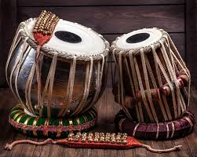
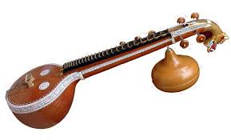
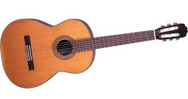

A tabla is a pair of hand drums from the Indian subcontinent. Since the 18th century, it has been the principal percussion instrument in Hindustani classical music, where it may be played solo, as an accompaniment with other instruments and vocals, or as a part of larger ensembles.

The veena is a string instrument originating in India. The Veena instrument and its variants play an important role in Hindustani classical music and carnatic classical music, from North and South India respectively. It can be either a zither or a lute, depending on the type of veena.
